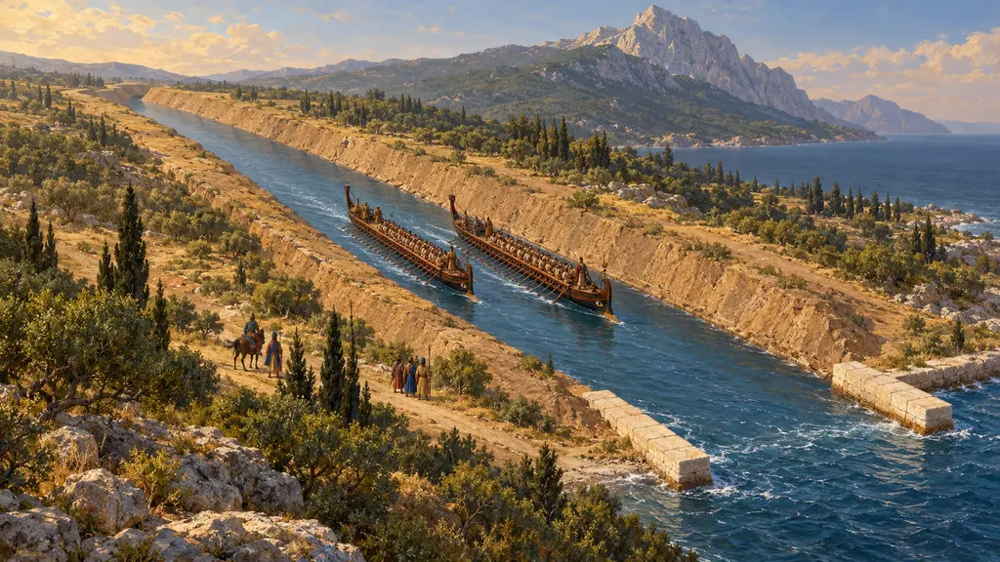
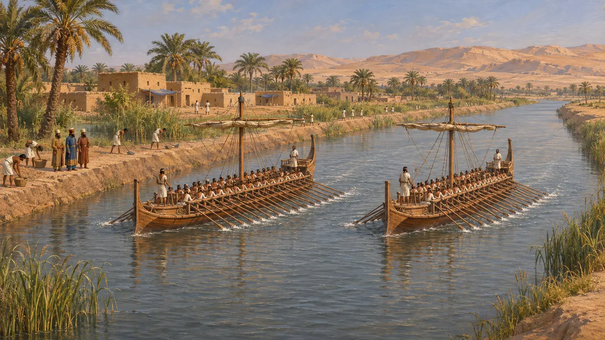
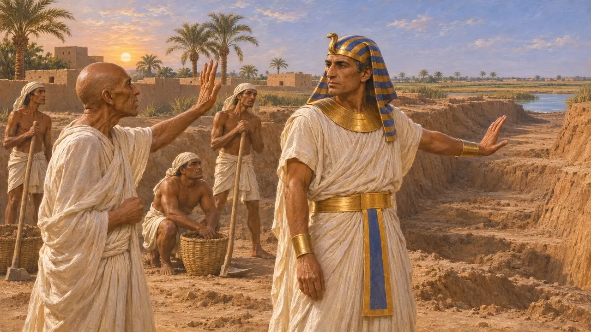
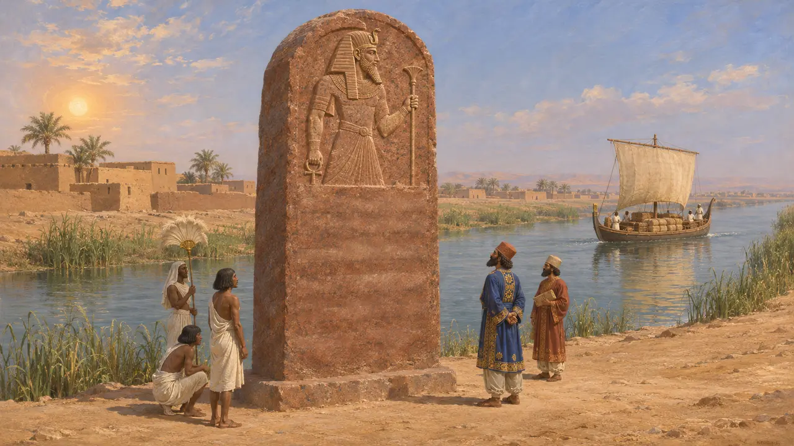
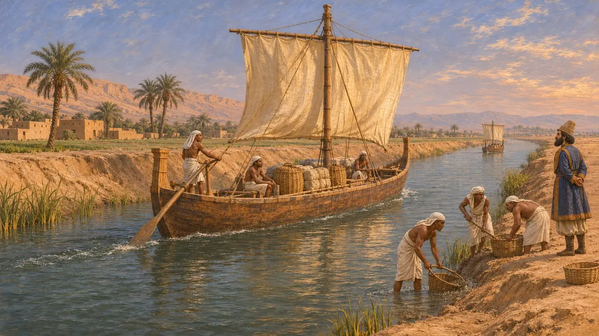
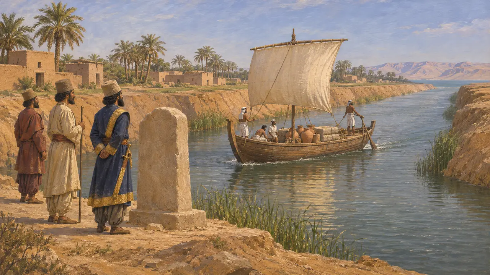

Encyclopedia › Battles and events

Darius's canal from the Nile to the Red Sea
Canal from the Nile to the Gulf of Suez, Egypt, under Darius I, about 500 BCE
In the game: Level 5: The Charter
Darius I had a canal dug, or dug again, from the eastern Nile through the Wadi Tumilat to the Gulf of Suez, linking the Nile, and through it the Mediterranean, to the Red Sea. Herodotus says Pharaoh Necho II had begun it about a century earlier. Darius set up inscribed stelae along its course claiming that ships sailed through it from Egypt to Persia, a statement of the King's reach as much as a record of engineering.
In the game: The game shows the canal as a royal decree of about 515 that finishes Necho's work, following Herodotus. The real date is uncertain and may be later, and the stelae credit Darius alone without naming Necho.

Herodotus on the course of the canal
Ancient accountHerodotus says the canal left the Nile a little above Bubastis, passed the Arabian town of Patumus and ran to the Red Sea. He gives its length as four days' voyage and says it was wide enough for two triremes to be rowed side by side. He credits Necho with beginning it and Darius with digging it afterwards. He mentions it again when describing the coasts of Asia.
Herodotus 2.158; Herodotus 4.39

The oracle that stopped Necho
Later legendHerodotus adds that 120,000 Egyptians died during Necho's digging. He says the work stopped when an oracle warned the king that he was labouring for the barbarian. The figure for the dead cannot be checked. The warning was probably shaped after the event, when a foreign king had in fact completed the canal.
Herodotus 2.158

The stelae of Darius
In the recordLarge stelae stood along the canal line at Tell el-Maskhuta, near the Serapeum, at Kabret and at Shaluf. Fragments were found in the nineteenth century, when the modern Suez Canal was dug. One face carried Old Persian, Elamite and Babylonian texts, and the other carried an Egyptian text showing Darius as pharaoh. In the cuneiform text Darius says that he, a Persian, took Egypt and ordered the canal dug, and that ships went from Egypt to Persia as he wished.
DZc (Shaluf stele); G. Posener, La première domination perse en Égypte, 1936

Finished or abandoned
DisputedDarius's stelae say the work was completed and that ships passed through it. Strabo and Diodorus, writing centuries later, say instead that Darius stopped short. In their account he was warned that the Red Sea lay higher than Egypt and would flood the land, and later rulers finished the canal. Most historians trust the stelae over these later writers, though the canal probably silted up and needed clearing again and again.
Strabo 17.1.25; Diodorus 1.33; C. Tuplin, Darius' Suez Canal and Persian Imperialism, 1991

Date and purpose
DisputedNo surviving text dates the work. Some historians link it with Darius's presence in Egypt around 518, while others place the stelae later, near 500 or after. Herodotus tells how Scylax sailed down the Indus and round to Egypt, after which Darius made use of the southern sea. Historians still argue whether the canal carried regular trade or chiefly proclaimed the King's power from Egypt to Persia.
Herodotus 4.44; C. Tuplin, Darius' Suez Canal and Persian Imperialism, 1991
Sources
- Herodotus 2.158
- DZc (Shaluf stele of Darius)
- Herodotus 4.39
- Strabo 17.1.25
- G. Posener, La première domination perse en Égypte, 1936
- C. Tuplin, Darius' Suez Canal and Persian Imperialism, Achaemenid History 6, 1991